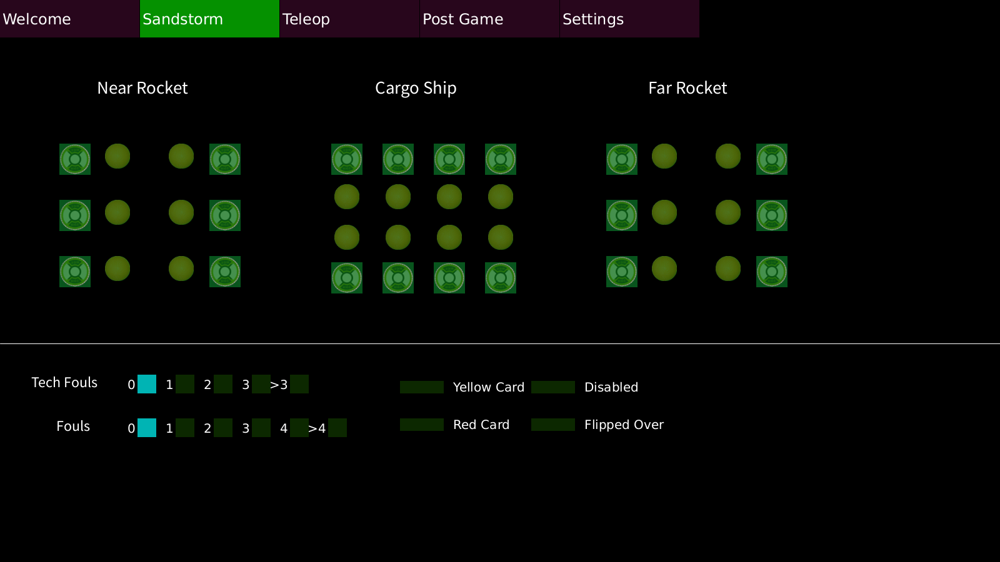
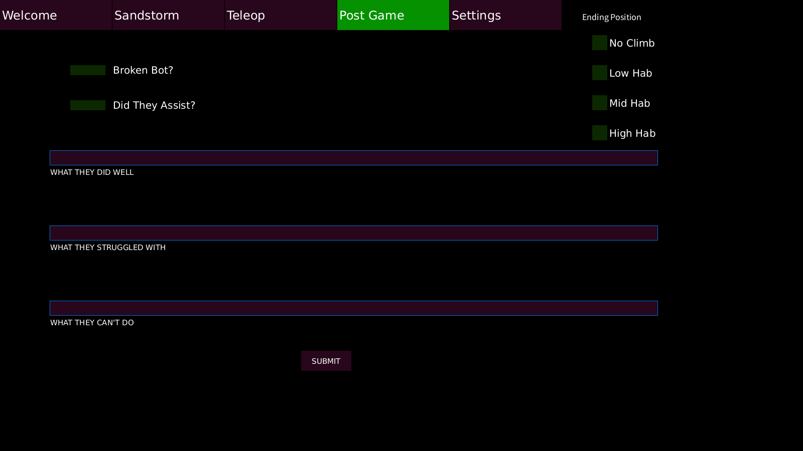

The 2019 Match Scouting app was my second year in FRC, and I ended up taking point on the scouting app project. Unlike the 2020 scouting app project I wasn't working alone on this project, I was taking point on a team of what ended up being 2 or 3. I was leading the design and planning parts of this project, and solving the major logistical challenges with the other part of the scouting system that we used to get to real time data for the drive team in the pit. On entry to the scouting app you are asked for what scout number you are, this is what decides what teams you are watching over the course of the competition. Here you also input the starting position of each team and the match number.
In a more traditional game, each match is sorted into a auto period and a teleoperated period, however in 2019 the game had the sandstorm period. For this section of the app, each scoring item is a toggle button for scouting inputs. The two major sections of development of this app were developing the app itself and developing the system to connect the apps and create data on each team and provide that data to the drive team in the pits before matches to allow them to develop better strategies.
The teleop section of the app is essentially the same as the sandstorm page, but it records the data now under the teleop section of the data. For this system, each of the 6 scouts in the stands gets a laptop that was connected via ethernet to a router and ethernet switch. Connected to this is a raspberry pi that was used as the external save disk locations for this scouting app and then pulled apart the json files that contain the data from the app. This entire system managed to fit in a standard shipping tote, and was able to be powered by old robot batteries that allowed for the router, switch, and pi to run off of an inverter and be able to charge the laptops in the event power was not convenient or available.
One of the major improvements that was made with this scouting app was adding qualitative feedback. This was a major boon as it allowed us to get better feeling of how teams preformed from what the scouts said. This would also allow us to get better general information than just the story that the data could tell us. This app really never found its full potential as our robot was unable to preform at a high enough level to allow us to make alliance member decisions.
The final part of this app was the settings page. This page contains all the settings for this app and has tools for configuring the remote drives on the windows laptops that the scouting system was using. This system worked better than the last system, which was using a webcam to scan qr codes that contained all of the data collected by the app. This improved system was not perfect and required a significant amount of kit to get to work fully, and this is the major problem that the 2020 scouting app was trying to fix.